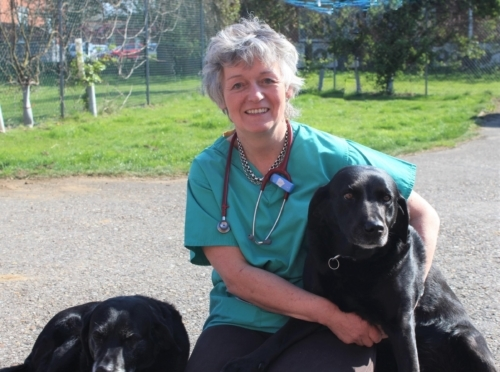

Experienced locum vet
Jill is a practicing veterinary surgeon with over 30 years of experience, qualifying from The University of Edinburgh in 1981. Originally from Aberdeen, Jill likes to combine her love of travel with her work and is available for locum work across the UK as well as abroad*.
Jill specialises in small animals however she also enjoys seeing equine practice, having worked with horses throughout both her professional and personal life.
Her love of animals and enjoyment of her work has seen her run Pet Blood Bank Donations for the Midlands region over a number of years, lead training courses for nurses with mulitple providers, and act as President for the East Midlands Branch of the BVA. She is an advocate for embracing new technologies and is always searching for ways to improve clinical processes.
Testimonials
Brin & Ewan McNeill, MsRCVS, Castle Veterinary Centre, Nottingham
"Jill worked with us for many years before moving back to her home territory, when she was greatly missed. We were delighted when she decided to offer locum cover and have already made use of her excellent services. Jill is a safe pair of hands, with extensive experience so that nothing clinically, surgically or client-wise fazes her. Patients and clients love her and she’s adaptable and willing to fit in with practice protocols."
Availability
Jill is available for locum work of [1+ weeks] outside of the Perth region. For these periods, she would require accommodation to be provided or an additional fee to cover accommodation expenses. Within the Perth + Tayside region, she is happy to undertake shorter and ad hoc periods of locum work subject to availability.
Please contact Jill for more information and her fees.